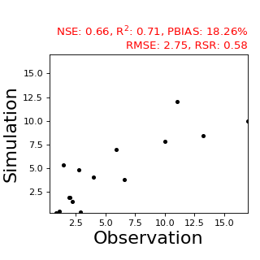

快速开始¶
1.安装PyGeoC¶
PyGeoC处在不断开发完善中，请根据如下命令安装最新开发版本。
1 2 3 | git clone https://github.com/lreis2415/PyGeoC
cd PyGeoC
python setup.py install
|
2.读取栅格文件¶
pygeoc.raster.RasterUtilClass.read_raster() 函数读取栅格数据，
并返回
pygeoc.raster.Raster 类的实例，通过其属性和方法可以获取
栅格元数据信息及栅格值的基本统计（如最大值、最小值、平均值、标准差等）。
1 2 3 4 5 6 7 8 9 10 11 12 13 14 15 16 17 18 19 20 21 22 23 24 25 26 27 28 29 30 31 | #! /usr/bin/env python
# -*- coding: utf-8 -*-
# Exercise 1: Begin with PyGeoC
from pygeoc.raster import RasterUtilClass
def main():
"""Read GeoTiff raster data and print statistics.
The output will be::
rows: 130, cols: 100
LLCornerX: 755145.28, LLCornerY: 654294.06
cell size: 10.0
mean: 203.92, max: 284.07, min: 139.11
std: 32.32, sum: 2650967.00
"""
input_tif = "../tests/data/Jamaica_dem.tif"
rst = RasterUtilClass.read_raster(input_tif)
# metadata information
print ("rows: %d, cols: %d" % (rst.nRows, rst.nCols))
print ("LLCornerX: %.2f, LLCornerY: %.2f" % (rst.xMin, rst.yMin))
print ("cell size: %.1f" % rst.dx)
# basic statistics, nodata is excluded
print ("mean: %.2f, max: %.2f, min: %.2f" % (rst.get_average(), rst.get_max(), rst.get_min()))
print ("std: %.2f, sum: %.2f" % (rst.get_std(), rst.get_sum()))
if __name__ == "__main__":
main()
|
3.调用TauDEM¶
pygeoc.TauDEM 子模块对TauDEM的函数调用进行了封装，以填洼算法（
pygeoc.TauDEM.TauDEM.pitremove()）为例。
注意：此时mpiexec和pitremove程序的路径均已在环境变量里设置。
此外，该函数允许指定mpiexec和pitremove以及用于多节点并行计算的 hostfile文件的绝对路径。
1 2 3 4 5 6 7 8 9 10 11 12 13 14 15 16 17 18 19 20 | #! /usr/bin/env python
# -*- coding: utf-8 -*-
# Exercise 2: Run TauDEM functions with PyGeoC
from pygeoc.TauDEM import TauDEM
def pitremove_simple_usage():
"""Simple usage of pitremove.
Workspace will be set as the base directory of input file.
"""
dem = '../tests/data/Jamaica_dem.tif'
fel = 'dem_pitremoved.tif'
num_proc = 2
TauDEM.pitremove(num_proc, dem, fel)
if __name__ == "__main__":
pitremove_simple_usage()
|
4.子流域划分¶
子流域划分是GIS分析中常用的工作流，PyGeoC提供了一种简单的方式完成该任务： 只需提供研究区DEM。同时，该工作流允许用户提供流域出口点数据、河网划分阈值 等参数。用户可根据默认参数下得到的流域划分结果进一步调整参数以达到满意的 流域划分。
- 如未提供流域出口，则该研究区汇流累积量最大的位置默认为流域出口
- 如未提供河网划分阈值，则根据
pygeoc.TauDEM.TauDEM.dropanalysis()程序自动确定阈值
1 2 3 4 5 6 7 8 9 10 11 12 13 14 15 16 17 18 | #! /usr/bin/env python
# -*- coding: utf-8 -*-
# Exercise 4: Delineate watershed based on TauDEM functions with PyGeoC
from pygeoc.TauDEM import TauDEMWorkflow, TauDEMFilesUtils, TauDEM
def main():
"""The simplest usage of watershed delineation based on TauDEM."""
dem = '../tests/data/Jamaica_dem.tif'
num_proc = 2
wp = '../tests/data/tmp_results/wtsd_delineation'
TauDEMWorkflow.watershed_delineation(num_proc, dem, workingdir=wp)
if __name__ == "__main__":
main()
|
5.常用函数积累¶
pygeoc.utils 子模块提供了一系列通用函数，如
文件操作类
pygeoc.utils.FileClass 、
字符串操作类
pygeoc.utils.StringClass 、
时间操作类
pygeoc.utils.DateClass 、
常用数学函数类
pygeoc.utils.MathClass 、
和其他通用函数类
pygeoc.utils.UtilClass 等。
以数学函数类中计算模型模拟Nash-Sutcliffe效率系数（NSE）等指标为例， 下图为实测值和模拟值的散点图分布。
{kind=link}
{kind=link}

模型模拟效率指标计算代码如下：
1 2 3 4 5 6 7 8 9 10 11 12 13 14 15 16 17 18 19 20 21 22 23 | #! /usr/bin/env python
# -*- coding: utf-8 -*-
# Exercise 6: Calculate model performance indexes with PyGeoC
from pygeoc.utils import MathClass
def cal_model_performance(obsl, siml):
"""Calculate model performance indexes."""
nse = MathClass.nashcoef(obsl, siml)
r2 = MathClass.rsquare(obsl, siml)
rmse = MathClass.rmse(obsl, siml)
pbias = MathClass.pbias(obsl, siml)
rsr = MathClass.rsr(obsl, siml)
print ('NSE: %.2f, R$^2$: %.2f, PBIAS: %.2f%%, RMSE: %.2f, RSR: %.2f' %
(nse, r2, pbias, rmse, rsr))
if __name__ == "__main__":
obs_list = [2.92, 2.75, 2.01, 1.09, 2.87, 1.43, 1.96, 4.00, 2.24, 17.00, 5.88, 0.86, 13.21,
10.00, 11.00, 6.60]
sim_list = [0.40, 4.88, 1.92, 0.49, 0.28, 5.36, 1.89, 4.08, 1.50, 10.00, 7.02, 0.33, 8.40,
7.8, 12, 3.8]
cal_model_performance(obs_list, sim_list)
|